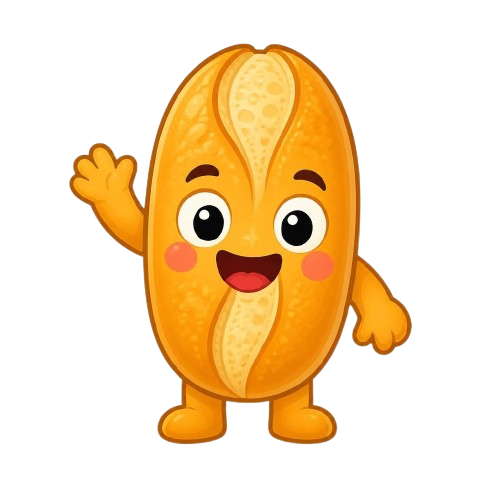

O pão quentinho, no mapa do seu bairro.
Identidade visual para o sistema inteligente de aviso de fornada, mapa de padarias e nota do pão. Um sistema que junta a clareza tranquila dos mapas da Apple com a energia lúdica e viciante do Duolingo — porque descobrir pão fresquinho deveria ser a coisa mais divertida do dia.

O Pãozin existe num instante muito específico: o segundo em que o pão sai do forno. Toda a identidade foi construída para comunicar urgência gostosa — não a urgência ansiosa de um app de entrega, mas a alegria de quem corre até a esquina porque sabe que ali tem pão quente.
Fundo em tons de papel e creme, água azul-suave, parques verde-lavado, estradas brancas com contorno quente, tipografia leve e cartões translúcidos com desfoque. O mapa é o palco silencioso — quem brilha são as padarias.
Botões gordos com borda inferior sólida que "afundam" ao toque, tipografia arredondada e extra-preta, cores saturadas, progresso gamificado, sequências (streaks) e um mascote que comemora cada fornada com você.
A forma do pão francês virou pino de mapa. A casca dourada virou a cor primária. O "saiu do forno" virou o verde de conquista. E a nota do pão virou a métrica que a vizinhança disputa.
"Se não dá vontade de sair de casa correndo, não está pronto." Todo elemento visual precisa passar nesse teste: o mapa tem que mostrar o caminho, o botão tem que dar vontade de apertar, e a notificação tem que cheirar a pão.
O símbolo nasce de uma fusão direta: a silhueta do pão francês com a ponta afinada do pino de localização do Apple Maps. É imediatamente lido como "tem pão aqui" — e funciona em 16px.
Respiro mínimo = altura da letra "P" do wordmark em todos os lados. Nada invade essa margem.
Abaixo de 24px use apenas o símbolo, sem o wordmark. Nunca contorne nem aplique sombra dura.
Não espelhar nem rotacionar
Não trocar as cores da marca
Não comprimir a assinatura
Não aplicar sobre fundo ruidoso
A paleta tem duas temperaturas: o dourado da casca, que é a marca e o que representa o pão; e o verde fornada, que é o estado "disponível agora" — herdado diretamente do verde de acerto do Duolingo. O azul e o verde do mapa vêm do Apple Maps e vivem só dentro do mapa.
Miolo 50% · Crosta 25% · Carvão 12% · Fornada 8% · Brasa 5%. O verde e o vermelho são tempero, não prato principal.
Duas famílias, papéis bem separados: Nunito (peso 800/900) dá o caráter lúdico e gordinho da interface — o parente livre mais próximo do Feather Bold do Duolingo. Inter cuida do texto corrido e dos rótulos do mapa, onde a legibilidade vence a personalidade.
Títulos, botões, badges, números de destaque, nome das padarias nos cartões.
Parágrafos, descrições, nomes de ruas no mapa, endereços, textos de sistema.
O mapa é a tela principal do consumidor e segue fielmente a gramática visual do Apple Maps: terreno quase branco e dessaturado, vias brancas com contorno quente, água e parque em tons lavados, e cartões translúcidos flutuando por cima com desfoque de fundo. O contraste é reservado exclusivamente para os pinos do Pãozin — é o único lugar onde a marca grita.
1. Pino selecionado: escala 100%, com sombra projetada e elevação.
2. Pinos vizinhos: escala 78%, opacidade 72%.
3. Padaria com fornada ativa nos últimos 15 min ganha um anel pulsante verde ao redor do pino.
4. Nunca mais de 1 pino em destaque por vez.
blur(18px) saturate(180%) sobre rgba(255,255,255,.78)
raio 18px · sombra 0 8px 24px rgba(60,40,20,.16) · borda de 0.5px branca
Barra de busca, chips de filtro, cartão de padaria, controles de zoom
Todo elemento acionável do Pãozin tem borda inferior sólida de 4px na cor escurecida — o truque do Duolingo que faz o botão parecer um botão de verdade, físico, que afunda quando você aperta. É o que transforma o ato de avisar a fornada numa micro-recompensa.
Clique e segure para sentir o afundamento (translateY 4–6px).
O WhatsApp Central está avisando 42 clientes do bairro.
O n8n não respondeu. Tente novamente em alguns segundos.
68% da meta de clientes avisados hoje · barra de 12px, raio total, gradiente da crosta.
Sequência de pão quentinho do cliente
Nota do pão da Padaria Central
Ranking do bairro esta semana
Vizinhos avisados pela fornada
Ícones de linha com traço de 2,5px, pontas e cantos arredondados e grid de 24px, na cor Carvão ou Crosta Escura. Quando um ícone representa um estado ativo, ele ganha preenchimento sólido na cor Fornada.
Localização
Pão
Forno
Cardápio
Nota do pão
Avaliar
Avisos
Fornada
Um pão francês antropomórfico, sorridente e sempre acenando. Ele é o narrador emocional do produto: comemora quando a fornada sai, faz cara de sono quando o pão esfria e incentiva o cliente a manter a sequência de dias.
✓ Tela de boas-vindas e cadastro no WhatsApp
✓ Estado vazio do mapa ("nenhuma padaria por aqui ainda…")
✓ Notificação de fornada enviada com sucesso
✓ Tela de conquistas e sequências
✕ Dentro do mapa ou sobre vias
✕ Em telas de erro de pagamento da padaria
✕ No painel operacional do padeiro (ali a prioridade é clareza, não fofura)
Próximo, caloroso, direto e com um tempero de humor. Sempre em primeira pessoa do plural quando fala pela padaria, e sempre tratando o cliente por você. Frases curtas, verbos de ação, emoji com parcimônia (no máximo dois por mensagem).
| Diga | Não diga |
|---|---|
| O pão saiu agora! | Notificação de evento de produção |
| Bora garantir o seu? | Realize sua compra |
| Pão frio por aqui 🥶 | Sem estoque disponível |
| Você avisou 42 vizinhos | Disparo concluído com sucesso |
Obrigatório em toda mensagem: a rota de saída ("Responda 0 para parar de receber avisos"). É proteção do número central contra denúncias de spam — e é respeito com o vizinho.
Mapa do Apple Maps ao fundo, cartões translúcidos, tipografia arredondada, botão gordo verde e o pino-pão marcando onde tem pão quente. Abaixo, a tela principal do consumidor e o painel do padeiro.
R. das Flores, 214 · 4 min a pé
Sua sequência: 7 dias de pão quentinho 🔥
Tela do consumidor · mapa + cartão de padaria
Padaria Central do Bairro
Assinatura ativa · R$ 20,00/mês
Painel do padeiro · um botão, zero fricção
A identidade foi desenhada para ser implementada em Bootstrap 5 + CSS custom properties — sem build step, sem framework. Os tokens de cor e raio são variáveis CSS, os botões são uma classe utilitária de 6 linhas, e o mapa pode ser renderizado com Leaflet usando um estilo customizado que replica a paleta Apple. Tudo isso roda em PHP puro com consumo mínimo de RAM, exatamente como a arquitetura do projeto exige.